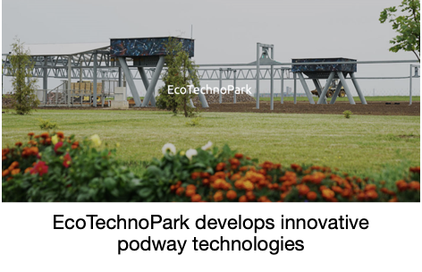
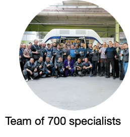
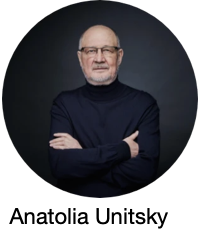
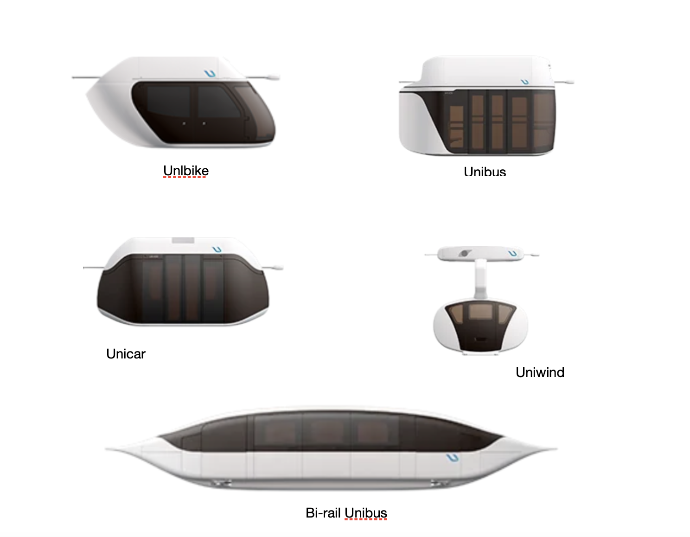

<!DOCTYPE html>
<html>
<head>
    <title>Podway Nepal</title>
    <link rel="stylesheet" href="design/design.css">
    <link rel="icon" 
      type="image/jpeg" 
      href="imageassets/websiteassets/logo.jpeg" />
</head>
<body>
    <div class="topnav">

         
        <a href="index.html">Home</a>
        <a href="transportation-in-nepal.html">Transportation in Nepal</a>
        <a href="podwaysolution.html">Podway Solution</a>
        <a class="active" href="#">Unitsky</a>
        <a href="benefits-to-nepal.html">Benefits to Nepal</a>
        <a href="executiveteam.html">Executive Team</a>
        <a href="contactus.html">Contact Us</a>
        <div class="sociallink">
             
             
             
             
             
        </div>
        
        </div>


          <div class="details-container">

           

            <p><strong>Unitsky is substantial</strong>&nbsp;</p>
<p>The company combines:&nbsp;</p>
<p>&bull;86 design bureaus, including a special design and technology Bureau with pilot production&nbsp;</p>
<p>&bull;36 buildings and structures, more than 3,000 units of machinery and equipment&nbsp;</p>
<p>&bull;36 ha for its demonstration and certification center as well as it six transport complexes&nbsp;</p>

 
<p><strong>The company philosophy</strong>&nbsp;</p>
<p>Like millions of people on our planet, Unitsky staff face growing transport challenges every day &mdash; traffic jams, accidents, pollution, overcrowded buses and metro cars.</p>
<p>&nbsp;Unitsky believes that transport should be the solution to problems, not the source of them. Therefore, the Company takes responsibility for creating innovative, environmentally friendly and safe transport systems that will also save people&apos;s time.&nbsp;</p>
<p><br></p>
<br><br>
 
<p><strong>EcoTechnoPark</strong></p>
<p>&nbsp;EcoTechnoPark carries out scientific research, experiments with creative designs, develops innovative string technologies, and certifies leading-edge transport and infrastructure complexes including freight, urban, and highspeed intercity transportation systems.&nbsp;</p>
<p>During the last four years, the test center built five demonstration and certification test complexes of different types. The test facilities include more than four kilometers of string.&nbsp;</p>
<p>The test facilities incorporate the entire infrastructure of stations, switches, water supply and sewerage. The power supply system has a total capacity about 1,000 kilowatts, several communication and intelligent control systems, and an array of sensors.&nbsp;</p>
<br><br>
 
<p><strong>Team of 700 specialists</strong></p>
<p>&nbsp;The Unitsky team includes more than 700 specialists &mdash; engineers, project designers, technologists, logisticians, builders, economists, etc. These professionals are experienced in working with the largest and most complex technology companies in Belarus.&nbsp;</p>
<br><br>
 
<p><strong>Anatolia Unitsky: General Designer&nbsp;</strong></p>
<p>Anatolia Unitsky is the visionary behind Unitsky String Technologies. He is the General Designer. As the lead scientist and inventor, he authored more than 200 scientific papers, 20 monographs, and more than 150 inventions in the fields of construction, transportation, engineering, electronics, and chemical engineering.&nbsp;</p>
<br><br>
<p><strong>Unitsky has many cars &nbsp;</strong></p>
<p>Unitsky offers many types of cars that 2 passengers up to 16. The cars can be designed to travel 60 km an hour in urban areas up to 500 km an hour on high speed inter-urban routes.&nbsp;</p>

           
</div>

<div class="content-container">
    <h1 class="contentheader">
        First Podway Sites
    </h1>
    <p class="contentlist"> 
        We have two podway systems are already on the drawing boards </p> <p class="contentlist"> – one at the Lumbini Sacred Garden and the other in Gokarneshwor inn the Kathmandu Valley. 
    </p>
        <p class="contentlist"> 
            The Lumbini Sacred Garden is the birthplace of Lord Buddha and a UNESCO World Heritage site
        </p>
        <p class="contentlist"> 
            Gokarneshwor is one of 13 municipalities in the Kathmandu Valle 
        </p>
   
    <button class="buttonmore" onclick="location.href='firstpodwaysites.html'">Learn More</button>
  </div>

          <div class = "footer">
            <p><span>&#169;</span> All Rights Reserved, Podway Nepal 2021. <a href="privacyandlegal.html">Privacy and Legal</a></p> 
            <div class="footersociallink">
               
               
               
               
               
              </div>
          </div>
          </div>
</body>
</html>